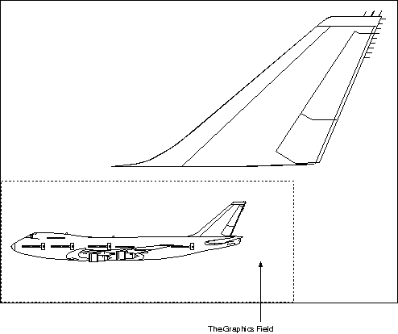

The graphics field defines a rectangular clipping area in the presentation page. It is defined in GpiSetGraphicsField.
Note: If this clipping area is to be used, it must be defined before any drawing begins.
Specify the size of the graphics field in presentation page coordinates as input to GpiSetGraphicsField.
Only the graphic output contained in this clipping boundary is visible when the presentation page is transformed to device space. By default, the graphics field is infinitely large and therefore performs no clipping. If you do specify a graphics field, however, any point on its boundary is considered within the graphics field and is not clipped. When a drawing primitive, such as a line, intersects a graphic field, any part of the line outside the graphics field is clipped. The following figure shows how a graphics field could be defined for a presentation page.

The Graphics Field
The broken line shows an arbitrary graphics field that is smaller than the presentation page. The aircraft tail, a separate object in the presentation page, is outside the graphics field and is clipped away as it is drawn.
The picture assembled in the graphics field is the picture that is displayed or printed. If you do not define a graphics field, the picture assembled in the presentation page is the picture that is displayed or printed. The presentation page is not a clipping boundary, and graphics in page coordinate space that are outside the presentation page boundary, therefore, might be visible.